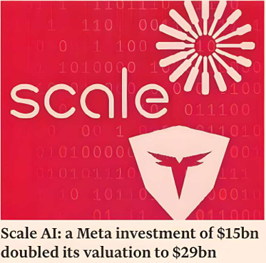

Top artificial intelligence groups are replacing low-cost "data labellers" in Africa and Asia with highly paid industry specialists, in the latest push to build "smarter" and more powerful models.
Companies such as Scale AI, Turing and Toloka are hiring experts in fields such as biology and finance to help AI groups create more sophisticated training data that is crucial for developing the next generation of AI systems.
The rise of so-called "reasoning" models, such as OpenAI's 03 and Google's Gemini 2.5, has accelerated the move away from employing thousands of low-cost workers in countries such as Kenya and the Philippines, who are typically paid less than $2 an hour to undertake the time-consuming task of annotating the huge datasets used to train AI models.
"The AI industry was for a long time heavily focused on the models and compute, and data has always been an overseen part of AI," said Olga Megorskaya, chief executive and co-founder of Dutch group Toloka. "Finally, [the industry] is accepting the importance of the data for training."
This shift has led to a surge in investor interest in data-labelling start-ups. In June, Meta invested $15bn in the US group Scale AI, doubling its valuation to $29bn, as part of a push to catch up with rivals.
In March, California-based Turing AI raised $111mn at a $2.2bn valuation, while Jeff Bezos's personal firm Bezos Expeditions led a $72mn investment round for Toloka in May.
Previously, data labellers would handle simple tasks, such as drawing boxes on images to identify objects, describing what images represent, selecting fluent ways to express things and weeding out bad answers from datasets that often contained violent or graphic content.
Because AI models need more data to perform better, these workers were expected to process tasks in seconds and complete hundreds of tasks during a working day to create vast datasets.
Now, the demand for these tasks had dropped significantly as many of them could be automated, said Megorskaya.
Joan Kinyua, president of the Data Labelers Association in Kenya, said workers were now being tasked with jobs that relied on localised language skills and knowledge. The group had also seen jobs in which human labellers were tasked with conducting final quality control checks for AI-generated content.
As leading AI groups such as OpenAI, Anthropic and Google attempt to develop models that they claim will exceed human intelligence, there is a push to focus on the quality of datasets and hiring experts to examine complex problems.
"What these models now need is data of a real human using the models to do knowledge work, and getting feedback on when the model is failing," said Jonathan Siddharth, co-founder and chief executive of Turing AI.
To ensure that models perform well in a wide variety of fields, from coding to physics and finance, deep-pocketed AI companies are now willing to pay for more sophisticated datasets and experts from around the world.
To attract people from different industries, Turing paid experts 20-30 per cent more than they received in their current jobs, said Siddharth. While budgets for data are only about 10-15 per cent of the hundreds of billions of dollars AI companies spend on computing power, it remained an "enormous amount of money," he added.
New features and capabilities, such as chain of thought, which shows how AI models solve problems step by step, were developed by having human experts show how they broke down problems, said Toloka's Megorskaya.
Experienced software engineers might also be asked to come up with tasks that are relevant for their field, and then solve them by writing code, debugging it and checking for security vulnerabilities.
Meanwhile, validating a physics theory would require contributions from a physicist to articulate how to build a simulator to test whether the theory is true, a software engineer to code the simulator and a data scientist to analyse the results of the simulation.
"The result of this is the model's not just going to be better than a physicist. It's going to be better than a superposition of somebody who's at the top in physics, computer science and data science," said Turing's Siddharth.